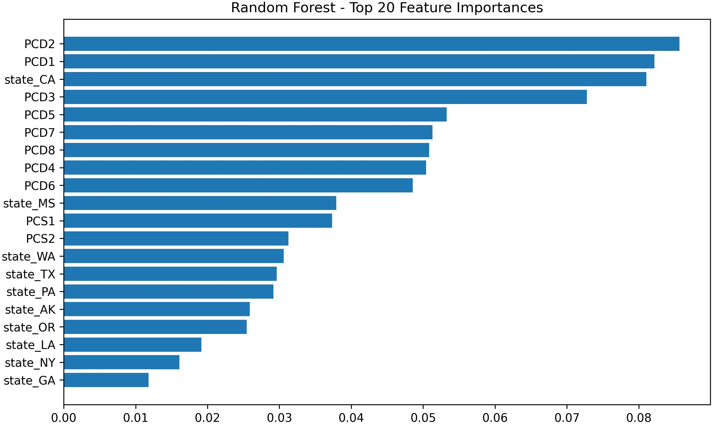
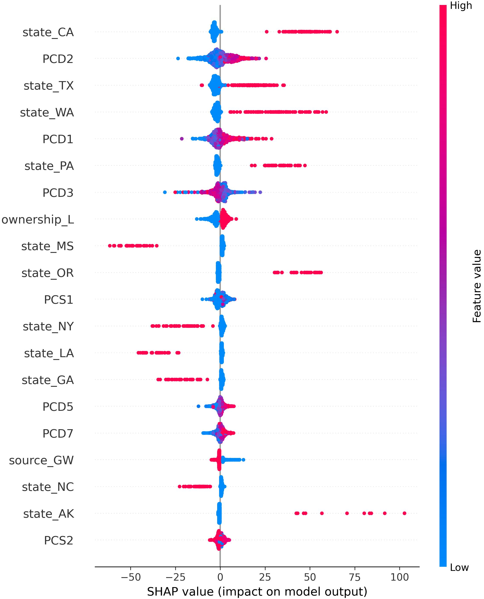

GEOGRAPHIC DISTRIBUTION
State-level view
NO DATANo geographic observations for the current selection
LowerHigherClick a state to filter
NATIONAL COMMUNITY WATER SYSTEMS
GEOGRAPHIC DISTRIBUTION
DISTRIBUTION
UTILITY-LEVEL RECORDS
| Rank | Utility record | State | Ownership | Population | Annual charge | Burden | 10y health | Coverage |
|---|
CASE-FINDING WORKSPACE
Separate model-relative anomalies from observed changes over time.
EMMA · MODEL-RELATIVE SCREEN
Residual = observed − cross-validated prediction. Large absolute residuals identify systems furthest from the fitted regression surface. Percentile flags are screening thresholds, not confidence intervals.
| Rank | Utility record | State | Ownership | Observed | Expected | Residual | Extremeness |
|---|
INTERIM · COMBINED SUBSET
Positive change means the annual violation average worsened; negative change means it improved. This interim comparison covers PWSIDs available in combinedscaled.xlsx; national all-PWSID coverage is pending an additional dataset.
Points above the diagonal worsened; points below it improved. Extreme values are capped visually at the 99th percentile but retain their true values in the table.
SELECTED RECORD
The selected utility's PWSID, ownership, previous-period average, recent-period average, and change will appear here. This comparison is descriptive and is not evidence of a causal ownership effect.
TREND OUTLIERS
| Rank | PWSID | State | Ownership | Population | 10-year count | Previous annual avg | Recent annual avg | Change | Direction |
|---|
REPORT MODEL EVIDENCE
A focused view of the report's two principal screening outcomes and the samples on which they were estimated.
CORE VALIDATION RESULTS
Average annual charge and 10-year health violations. Combined is excluded until its sample lineage is reconciled.
| Outcome | Layer | Analysis N | Encoded features | CV R² | CV RMSE | CV MAE |
|---|
INTERPRETABILITY EVIDENCE
Final report-era random-forest outputs. Importance ranks predictive contribution; SHAP shows direction and dispersion of effects.


SAMPLE LINEAGE AUDIT
| Layer | Reported N | Interpretation | Status |
|---|---|---|---|
| EMMA | 43,531 | National community water-system layer. | Verified |
| Public | 8,007 | Public financial subset used for the core charge and violation models. | Verified |
| Private | 277 | dfpvt model rows; 243 unique PWSIDs after identifier reconciliation. | Verified |
| Combined | 11,628 | Standalone combinedscaled workflow; not the arithmetic union of the current Public and Private samples. | Not reconciled |
Expected Public + Private under the current core samples: 8,284. Reported Combined: 11,628. The extra 3,344 observations must be traced before Combined can support cross-layer comparison.
Additional financial outcomes and legacy Combined outputs retained for provenance.
| Layer | Outcome | Analysis N | Encoded features | Train R² | CV R² | CV RMSE | CV MAE |
|---|
REPRODUCED REPORT OUTPUTS
Performance summaries recovered from the report-era random-forest output workbooks.
VALIDATION SUMMARY
| Layer | Outcome | Observations | Features | Train R² | CV R² | CV RMSE | CV MAE |
|---|
Model performance, feature importance, aggregated SHAP, state-level SHAP, partial dependence, interaction diagnostics, and H-statistics.
Observed and out-of-fold predicted values, residuals, absolute-residual percentiles, flags, and model-version metadata at the PWSID level.
Average annual charge and 10-year health violations, calculated offline and validated against the report-era model metrics.
PROVENANCE AND LIMITATIONS
The state map uses the stored 2018 Census state GeoJSON. No CWS service-area polygons or utility coordinates were found in the project directories, so the map does not imply utility-level location or service boundaries.
Charge burden is annual average water charge divided by median household income. It is a screening ratio, not a formal affordability determination. The reported revenue-to-expense ratio describes available reporting-year records; a value below 1 does not by itself establish financial distress. Missing financial data means “not matched,” not zero.
The primary analytical unit is the community water system identified by PWSID. MRCTI city-level aggregation is not performed, and city-to-PWSID correspondence still requires a validated crosswalk.